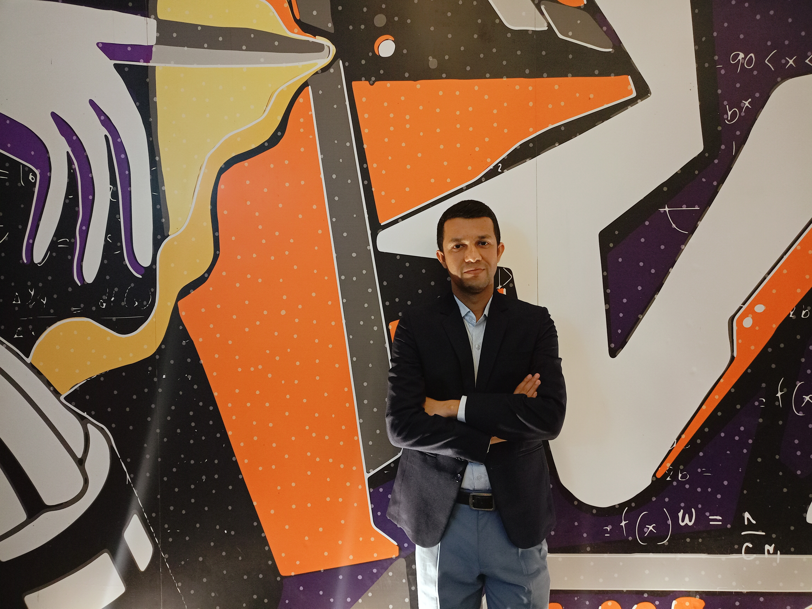

```Atmospheric Physics Researcher | Tropical Cyclone Researcher
I am an Atmospheric Physics researcher with a strong interest in Tropical Cyclogenesis, Climate Change, Environmental Threshold Analysis, and Bay of Bengal cyclone dynamics. My research focuses on understanding environmental parameters and their impacts on cyclone formation and intensity.
Bangladesh University of Engineering and Technology (BUET)
2025 | CGPA: 3.33/4.00
University of Dhaka
2019 | CGPA: 3.23/4.00
University of Dhaka
2018 | CGPA: 3.24/4.00
Poster Presentation on Tropical Cyclogenesis over the Bay of Bengal.
Oral Presentation on Environmental Parameter Threshold Analysis.
Virtual Participation in Numerical Weather Modeling Workshop.